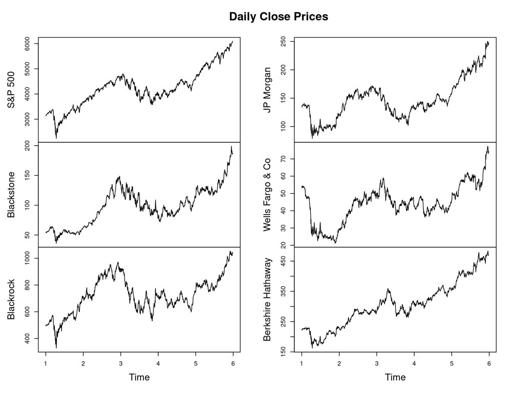
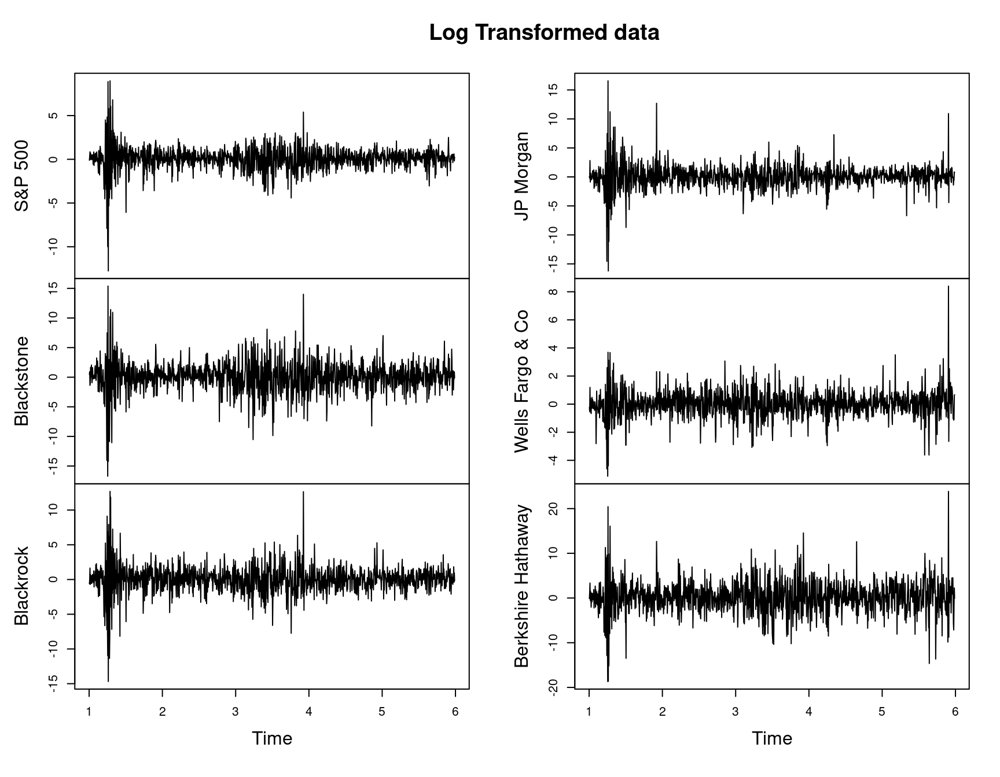
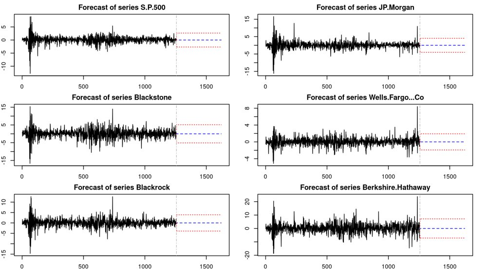
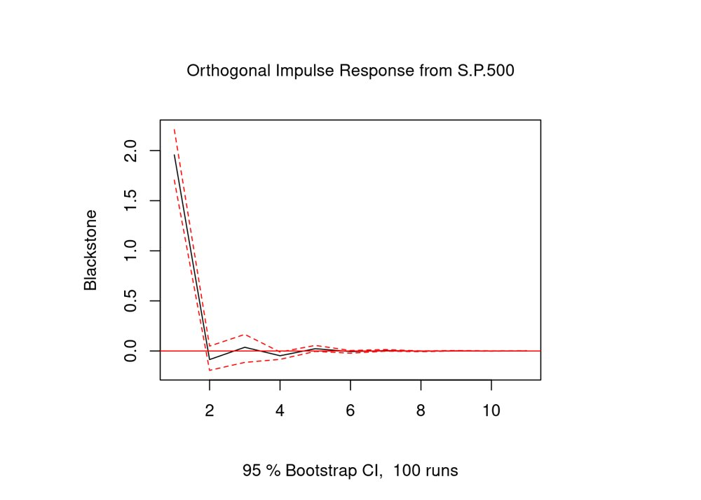
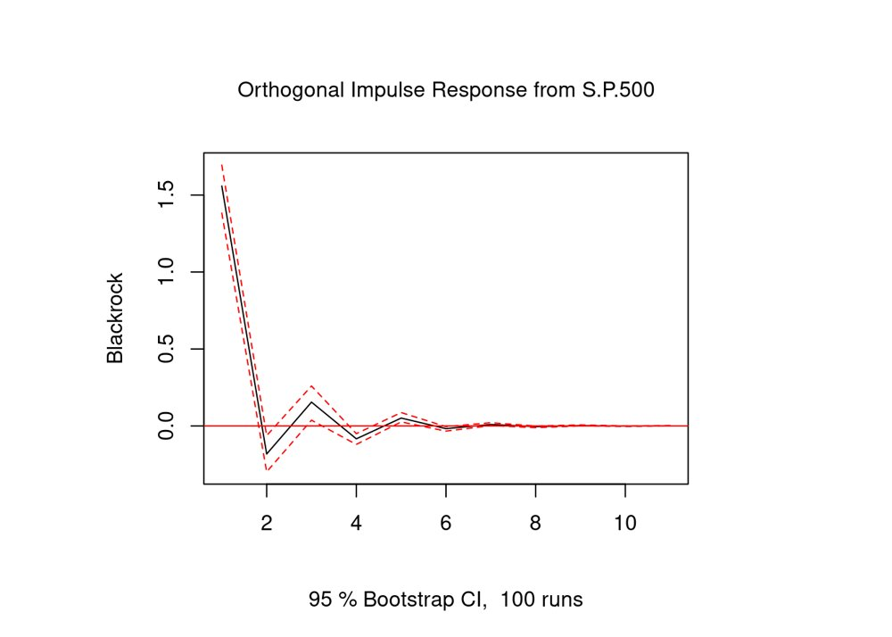
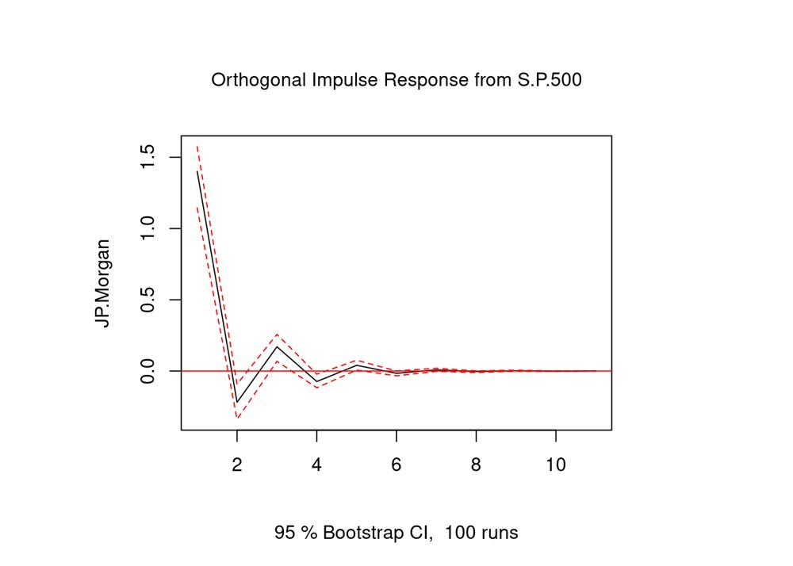
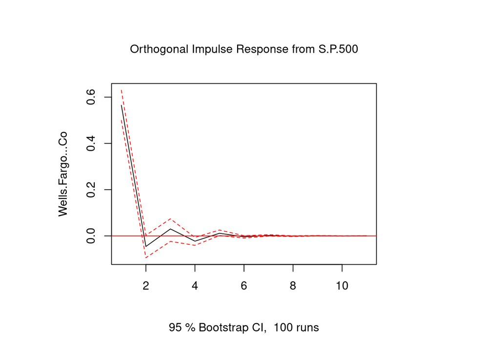
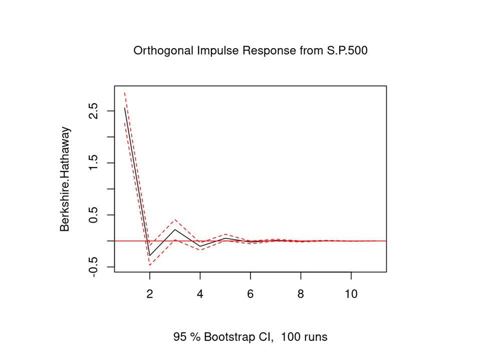

Forecasting financial markets with a VAR model
The question
How do shocks to the S&P 500 spill over to five large financial stocks, and how well can a vector autoregression (VAR) model forecast them together?
- Daily prices, S&P 500 + 5 stocks
- ADF tests: non-stationary
- Log and first differences
- VAR(2) model
- Forecasts and impulse responses
What I did
- Collected five years of daily closing prices (December 2019 to December 2024) from Yahoo Finance for the S&P 500 and five stocks: Blackstone, BlackRock, Berkshire Hathaway, JPMorgan, and Wells Fargo.
- Tested the raw prices for stationarity with the Augmented Dickey-Fuller (ADF) test. All six series were non-stationary.
- Transformed the series so they could be modeled: 100 times the log difference for the S&P 500, Blackstone, BlackRock, and JPMorgan, and a simple first difference for Wells Fargo and Berkshire Hathaway.
- Confirmed stationarity of the transformed series with both the ADF and KPSS tests.
- Chose the lag length with information criteria (AIC picked 2 lags, BIC picked 1) and estimated a VAR with 2 lags.
- Forecast 365 days ahead for each series, and ran impulse response functions to measure how a shock to the S&P 500 moves each stock over the next ten periods, with bootstrapped 95% confidence bands.
Results
The raw price series were all non-stationary (ADF p-values between 0.32 and 0.89). After transformation, every series passed both the ADF test (p = 0.01) and the KPSS test (p-values of 0.09 or higher), so the VAR could be estimated on stationary data.
The impulse response functions show how a shock to the S&P 500 moves each stock in the first period, with the 95% confidence interval in brackets:
- Blackstone: 1.96 [1.71, 2.21]
- BlackRock: 1.56 [1.38, 1.69]
- JPMorgan: 1.40 [1.14, 1.57]
- Wells Fargo: 0.57 [0.50, 0.63]
- Berkshire Hathaway: 2.56 [2.26, 2.85]
All five responses were positive and statistically significant, then faded to roughly zero within 6 to 10 periods. I read the smaller Wells Fargo response as consistent with its retail-banking focus, compared with the more market-sensitive investment and asset-management firms.
Note on units: Wells Fargo and Berkshire Hathaway were modeled in first differences of price, while the other series were log returns, so their response sizes are not directly comparable with the rest.








Tools
- R
- quantmod
- vars
- tseries
- stargazer
- R Markdown
Skills shown
- Time series econometrics
- Stationarity testing (ADF, KPSS)
- Data transformation
- VAR modeling
- Forecasting
- Impulse response analysis
- Interpreting statistical output
Code preview
Stationarity tests, VAR estimation, forecasts, and impulse responses
# Test each price series for stationarity
adf_test <- sapply(merged_data, function(v) adf.test(v, alternative = "stationary")$p.value)
# Log-differenced returns (shown for the first series; the others follow the same pattern)
transformed_data <- cbind(100*diff(log(sp500_data)), 100*diff(log(blackstone_data)), ...)
# Choose the lag length and estimate the VAR
lag_selection <- VARselect(stationary_data, lag.max = 10, type = "none")
model_estimate <- VAR(transformed_data, p = optimal_lag, type = "none")
# Forecast 365 days ahead
forecast.series <- predict(model_estimate, n.ahead = 365)
# How does an S&P 500 shock move Blackstone?
irf_blackstone <- irf(model_estimate, impulse = "S.P.500", response = "Blackstone")Excerpts from the original file, reformatted for readability. View the full R Markdown file on GitHub.